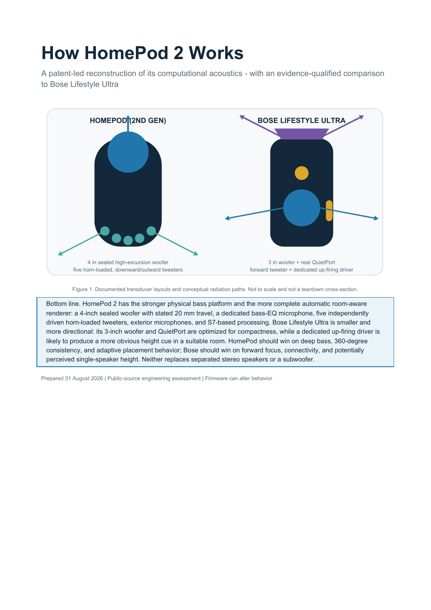

Apple HomePod 2
Axisymmetric, sealed, feedback-controlled
A 4-inch high-excursion woofer with stated 20 mm travel sits above five horn-loaded tweeters arranged around the base. A bass-EQ microphone and exterior microphone array feed continuous processing.
BassSealed woofer + EQ + microphone feedback + level-dependent protection
SpatialCorrelation analysis + selectable beam patterns + room-aware direct/ambient steering
RoomClassifies wall, corner, bookshelf, or free-space placement and adapts